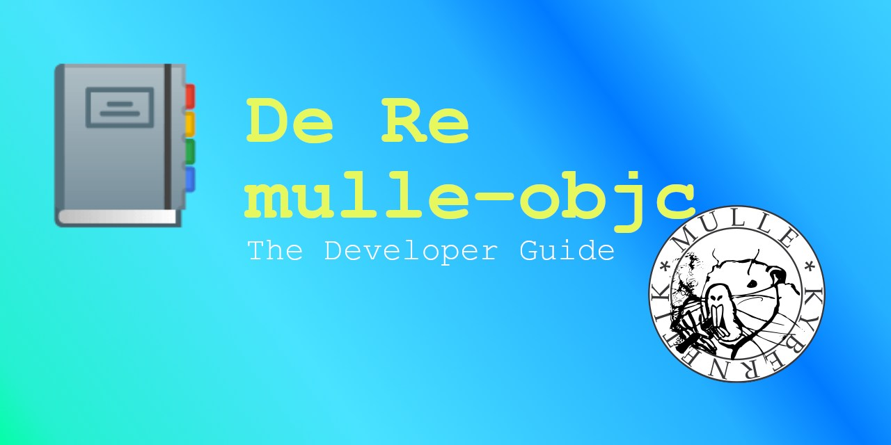
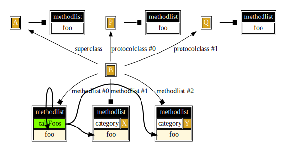

De Re mulle-objc

Welcome to the developer guide for mulle-objc. This guide will enable you to get up and running quickly with Objective-C on the platform of your choice.
System Requirements
mulle-objc is C, so anywhere C runs Objective-C should run too. But that’s not entirely true. mulle-objc is not suitable for tiny CPUs. When you build the Foundation library as a shared library you end up with 2.5MB (mulle-objc 0.5MB). So any system with less than 4MB RAM, will likely not cut it. The CPU needs to be at least 32 bit wide to be able to use mulle-objc selectors efficiently.
You can expect the MulleObjC library to work on any suitable ARM or X86_64 or I686 system. The Foundation support outside of Linux, FreeBSD and macOS is still somewhat iffy.
License
mulle-objc is permissively - BSD3 - licensed and free of cost, meaning you can use it anywhere you like and wish.
Objective-C Tutorials
A complete Objective-C tutorial is outside the scope of this manual, but there some useful ones online, in case you are not familiar with the language. Most of these cover Objective-C in its 2.0 (Apple) incarnation. Consult Differences to Objective-C 2.0 if you are in doubt about the applicability of what’s written to mulle-objc.
In general ignore parts about “gcc”, “Xcode”, “MacOSX”, “GNUStep”. Ignore parts about “Dot Syntax” as well as “Blocks” and anything mentioning “ARC”.
| Resource | Publisher | Description |
|---|---|---|
| Ry’s Objective-C Tutorial | RyPress | Very easy to read. Just keep in mind, that mulle-objc prefers +object over +alloc/-init and prefers mulle_printf over NSLog |
| Learn Objective-C Quick Guide | Tutorialspoint | Looks like a good tutorial. |
| Objective-C Tutorial | Codecrackers | This is basically the same as whats offered at Tutorialspoint, but there are differences. Someone plagiarized but I can’t tell who did it. The codecrackers page looks a bit nicer |
| Objective-C Tutorial | Etutorials | ??? |
| Learn Objective-C | CocoaDev | Gives a quick overview of concepts. |
| Programming With Objective C | Apple | This covers all the basics. |
mulle-objc Reads
Once you got the hang on Objective-C, the following list of mulle-objc pamphlets will surely be of interest:
| Title | Description |
|---|---|
| De Re mulle-objc | A hands on intro to develop mulle-objc programs combined with some deeper technical insights. |
| De Re NSObject | All about NSObject, object management, @autoreleasepool and coding conventions. A must read. |
| De Re @property | All about @property and its attributes. Required reading for all mulle-objc developers. |
| Objective-C Runtime in Pictures | The bits and bytes perspective on the mulle-objc runtime |
| mulle-objc Development with IDEs | How to setup several popular IDEs for mulle-objc development. |
| De Re mulle-sde | Developer guide for mulle-sde, should cover most workflow topics |
| mulle-objc CheatSheet | The is a good way to get a quick overview of what the Mulle Objective-C dialect has to offer. It is tailored to mulle-objc specifically, but it is no tutorial. |
| Mulle-sde WiKi | Mulle-sde WIKI more indepth information about the tooling. |
| mulle-objc community membership | It’s free! |
Other Objective-C Reads
Most of these books cover Objective-C in its 2.0 incarnation. Consult Differences to Objective-C 2.0, if you are in doubt about the applicability of what’s written:
| Resource | Publisher | Description |
|---|---|---|
| Concepts in Objective-C Programming | Apple | This is a more in-depth read to understand some terminology used by fellow Objective-C coders. Ignore the chapters “Delegates and Data Sources”, “Model View Controller”, “Object Modeling”, “Outlets”, “Receptionist Pattern”, “Target-Action”, “Toll-Free Bridging” |
| NSHipster | Mattt | Some articles cover Objective-C and the Foundation |
| onlineprogrammingbooks | A list of downloadable book PDFs. | |
| Zen and the Art of the Objective-C Craftsmanship | Bernardi - De Bortoli | A more advanced read. On a cursory examination, there is a lot there, that’s not applicable to mulle-objc or that goes against the mulle-objc style. |
mulle-objc Portal
Periodically check out mulle-objc which is the portal for all things mulle-objc.
Project Setup
Install mulle-objc
This guide doesn’t have detailed installation instructions for mulle-objc.
Read the instructions on foundation-developer and follow them.
Afterwards you should have mulle-clang and mulle-sde in your PATH.
mulle-clang --version
mulle-sde --version
and you should all be setup for coding.
Foundation vs mulle-objc
There are two starting points. If you want a full class system with strings, containers and OS support, you will want to base your code on the Foundation.
If you just want to play with a minimal runtime, base your code on MulleObjC. This is the best choice for new platforms.
Then, instead of -m foundation/objc-developer, use -m mulle-objc/objc-developer
mulle-sde is powerful enough to warrant its own guide De Re mulle-sde. But to get you moving quickly, lets set up a demo project right now:
Example “Hello World” project
Create
Generate a new executable project with:
mulle-sde init -m foundation/objc-developer -d hello-world executable
Your project filesystem structure on your file system will look like the
following tree output. You can see the demo source in src/main.m along
with more generated content:
hello-world
├── .mulle
├── CMakeLists.txt
├── README.md
├── cmake
│ ├── reflect
│ │ ├── _Dependencies.cmake
│ │ ├── _Headers.cmake
│ │ ├── _Libraries.cmake
│ │ ├── README.md
│ │ └── _Sources.cmake
│ └── share
│ ├── AAMSupportObjC.cmake
│ ├── ...
│ └── UnwantedWarningsC.cmake
└── src
├── import.h
├── import-private.h
├── main.m
├── reflect
│ ├── _hello-world-import.h
│ ├── _hello-world-import-private.h
│ └── objc-loader.inc
└── version.h
CMakeLists.txt is your main cmake project file. cmake is
the default mulle-sde build system, but it can be substituted with another,
if so desired.
The source is in the src folder. Source will be found in src or in any of the
its subfolders. A source file anywhere else will not be picked up by
mulle-sde reflect and will therefore not be built. (You can change the
default behaviour later)
Special folders
- The
.mullefolder is used for project management. You usually edit its contents via mulle-sde commands and not directly. reflectfolders will be recreated whenever themulle-sde reflectcommand is run, so don’t edit them.sharefolders will be overwritten when themulle-sde upgradecommand is run, so don’t edit those either.varfolders (found inside.mulle) can change any time a mulle-sde command is run, so don’t touch them.
Run
You are ready to craft your executable and run it. The very first craft
command will be quite slow, as mulle-sde will setup a virtual environment
for your project. This is somewhat akin to creating a docker container.
mulle-sde needs to do it once:
cd hello-world
mulle-sde craft
mulle-sde run
Edit
Consult the mulle-objc Development with IDEs guide to set up an editor or IDE of your preference.
You can then edit your project with:
mulle-sde edit
Add
Source files live in the src folder of your project.
The most convenient way to add files is with the mulle-sde add command, as
this gives you preconfigured implementation and interface files for a new class
for instance.
If you use a + in your filename, you will get files for a category.
mulle-sde add src/Foo.m
mulle-sde add src/Foo+Stuff.m
The add command will automatically run mulle-sde reflect, so that is all
there is to it. You can now craft your project with mulle-sde craft again.
You can use the -t option to specify the exact type of Objective-C
construct you want to generate (e.g. mulle-sde add -t protocolclass src/Boo.m).
Out of the box, mulle-objc provides these three types:
| Type | Description |
|---|---|
category |
Category .m and .h file |
protocolclass |
Protocolclass .m and .h file |
file |
Class .m and .h file |
Rename and Remove
You can move, rename or remove sources anyway you like with whatever
tool you like. After you made your
changes, run mulle-sde reflect to reflect your changes back into
CMakeLists.txt (indirectly via cmake/_Headers.cmake and
cmake/_Sources.cmake).
mkdir -p src/foo/wherever
mv src/Foo.* src/foo/wherever
mulle-sde reflect
mulle-sde craft
You can check that your files are found with mulle-sde files. You can
see how the proper include paths are generated by looking at the
INCLUDE_DIRS variable in cmake/reflect/_Headers.cmake.
Settings
You can look at the project settings with mulle-sde env.
You will see these relevant entries for source files:
PROJECT_SOURCE_DIR="src"
MULLE_MATCH_FILENAMES="config:*.h:*.inc:*.c:CMakeLists.txt:*.cmake:*.m:*.aam"
MULLE_MATCH_IGNORE_PATH=
MULLE_MATCH_PATH=".mulle/etc/sourcetree/config:${PROJECT_SOURCE_DIR}:CMakeLists.txt:cmake"
Files that match any of the wildcards given in MULLE_MATCH_FILENAMES are
considered interesting, matchable files. Changes in any of those files
should trigger a recraft. MULLE_MATCH_PATH contains the combination of files
and directories that will be searched. Conversely files, will be ignored that
are found in MULLE_MATCH_PATH but that are part of MULLE_MATCH_IGNORE_PATH.
Generic Headers
Ideally source files should be motile. One would like to easily move them between various projects without having to edit anything. The modern workflow achieves this with generic header names.
As we saw in the previous chapter, headers and libraries are transparently added and removed to a project with mulle-sde. All the external dependencies are isolated in header files with generic names. Headers belonging to the project do not appear in these files.
| Header | Description |
|---|---|
include.h |
Used by C header files |
include-private.h |
Used by C source files |
import.h |
Used by Objective-C interface files |
import-private.h |
Used by Objective-C implementation files |
So we can write our source code in a uniform way.
Objective-C
Foo.h:
#import "import.h"
@interface Foo : NSObject
@end
and the implementation like so:
Foo.m:
#import "Foo.h"
#import "import-private.h"
@implementation Foo
@end
C
For C its quite the same, but different header files are used.
foo.h:
#include "include.h"
void foo( void);
foo.c:
#include "foo.h"
#include "include-private.h"
void foo( void)
{
calling( "whatever");
}
Conclusion
As platform dependent headers and #ifdef definitions are isolated in
the generic headers, this is basically all there is to it. Read The beauty of generic header-names
for more details on this topic.
Memo: What doesn’t work yet, is full independence from other headers in the same library.
Dependencies
Your mulle-objc project will have dependencies. One dependency is either the MulleObjC library or the Foundation library and their constituent libraries. But you will likely want to add more.
mulle-sde makes this easy and in the best case a one-liner. Here’s how.
mulle-sde dependency manages the sourcetree
All dependencies are managed via a sourcetree. If you have created a
mulle-sde project as described previously, you can look at the pre-defined
sourcetree with mulle-sde dependency list or mulle-sourcetree list
(use -l -u for more detail).
| address
|--------
| Foundation
| Foundation-startup
These dependencies again can be mulle-sde and non mulle-sde projects. Each mulle-sde project in turn may have its own sourcetree with dependencies. So you can see where this is heading…
Add a repository from github
When adding a third-party repository, the first thing to decide is, if it is a C or an Objective-C repository. At this point in time C is more likely, so we will go with that first.
For github repositories there is a special syntax available, so you don’t have to type in the whole URL. This command adds https://github.com/libexpat/libexpat to your project:
C:
mulle-sde dependency add --c github:libexpat/libexpat
This command adds https://github.com/MulleWeb/MulleZlib to your project:
Objective-C:
mulle-sde dependency add github:MulleWeb/MulleZlib
Get build commands for free
libexpat is special, in that there is a craftinfo available for it. Many libraries can be built without a craftinfo, but for some libraries like libexpat a few tweaks are desirable. The craftinfo contains these tweaks.
You can look at the craftinfo site to see what is available.
If you have a craftinfo, that you would like to share, you are very welcome to contribute this craftinfo.
mulle-sde dependency craftinfo command.Header and link commands are automatically created
mulle-sde reflect will reflect the contents of the sourcetree into cmake files
residing under ./cmake and into header files residing under ./src.
This means you will not have to write any #include statements or add link
commands to your project. As dependencies are recursive, you also won’t have to
figure out against which system library to link.
Fix a missing include
Often mulle-sde can not guess the correct name and location of the central include header of a dependency correctly. This can be rectified with:
mulle-sde dependency set libexpat include "expat.h"
mulle-sde reflect
Fix a missing library
More rarely a library can not be found, because the name differs from the project. Fix this with:
mulle-sde dependency set libexpat aliases eXpat
mulle-sde reflect
Remove dependency
Removing a dependency again is as easy as typing mulle-sde dependency
remove libexpat and letting mulle-sde reflect reflect the changes back into
cmake and header files.
Projects with Multiple Targets
Objective-C is an Object Oriented Programming Language. With that comes the expectation of a plug-n-play programming environment.
It should be possible to add and remove functionality, without breaking the application. This expectation has been historically never fulfilled, due to deficiencies with the compilation tools, the Objective-C runtime and the way headers are handled.
A golden rule of mulle-objc is: do not create projects with multiple targets. Instead create multiple projects and link them together via dependencies.
Setting up a complex project for the modern workflow
If you have a library and an executable, make them two separate projects.
mulle-sde init -m foundation/objc-developer -d mylib library
mulle-sde init -m foundation/objc-developer -d myexe executable
Your project layout would then look like this:
myproject
├── myexe
└── mylib
As you want to use the library with your executable, you add the library as a dependency to the executable:
cd myexe
mulle-sde dependency add --objc --github "${GITHUB_USERNAME:-nobody}" mylib
The GITHUB_USERNAME can be fake, but it is needed to create a URL
for the library project, just in case you want to distribute your executable
later. It can also be changed later.
mylib is a sibling of myexe it
will be easily found. If you place it somewhere else, you need to add it’s
parent directory to the search-path variable MULLE_FETCH_SEARCH_PATH.
E.g. mylib is /home/wherever/src/mylib then modify the search-path with mulle-sde environment set MULLE_FETCH_SEARCH_PATH '/home/wherever/src:${MULLE_FETCH_SEARCH_PATH}'With mulle-sde dependency list or the more low-level mulle-sourcetree list -ll
you can see the dependency structure of your project.
address marks aliases include
------- ----- ------- -------
Foundation no-singlephase
Foundation-startup no-dynamic-link,no-header,no-intermediate-link
mylib no-singlephase
At this point you’re ready to craft again.
mulle-sde craft
And there you are.
#import anything or add link
statements to your CMakeLists.txt, it’s all done for you with
mulle-sde reflect.Good mulle-objc Code
Good Code
Objective-C is a fairly simple language extension. In this file all available Objective-C keywords and concepts will be discussed. Absent will be library features introduced by the Foundation.
The code will be regular Objective-C, unless specifically noted to be an Objective-C extension.
Forward Declaration and Import
You can #import and forward declare code:
#import <Foundation/Foundation.h>
// forward declarations of a class and a protocol
@protocol SomeProtocol;
@class Foreign;
Protocol
You can declare a protocol with @optional and @required methods and properties:
// declare a protocol with a required (default)
// and an optional method
@protocol MethodProtocol
@required
- (Foreign *) someMethod;
@optional
- (Foreign *) otherMethod;
// properties can be declared in protocols, yet the
// class must redeclare them
@property( assign) NSUInteger value;
@end
You can extend forward declared classes with your protocol, but this is rarely useful:
// extend Foreign class with this method, so
// we know we can message it with that protocol
@class Foreign< MethodProtocol>;
Classes
#pragma clang diagnostic ignored "-Wobjc-root-class"
@interface Foo : NSObject < MethodProtocol>
{
@public // The usual visibility modifiers except `@package`
@protected
@private
NSUInteger _value; // will be used as property "value" ivar
}
// properties and all supported property attributes
@property( readwrite, assign) NSUInteger value; // reimplement Protocol
@property( nonatomic, retain) Foreign *foreign; // creates own ivar
@property( readonly, nonnull) NSString *backedByIvar; // creates own ivar
@end
The implementation can @synthesize a property but it is superflous. The name
of the instance variable is fixed by the compiler to be '_'<name>.
Foo implements the required method from MethodProtocol.
@implementation Foo
@synthesize foreign = _foreign;
- (Foreign *) someMethod;
{
return( _foreign);
}
@end
@defs is available and great for writing fast accessors, when you don’t want your instance variables to be @public:
static inline Foreign *FooGetForeign( Foo *self)
{
return( ((struct{ @defs( Foo); } *) self)->_foreign);
}
@compatibility_alias
@compatibility_alias will work as expected.
// use Foo under alias Foobar
@compatibility_alias Foobar Foo;
Protocolclasses
You can declare protocolclasses. This is a mulle-objc extension to the Objective-C language. Protocolclasses will not work on other runtimes (though they will compile):
// protocolclass Description with default implementation of -description
@class Description;
@protocol Description
- (NSString *) description;
// properties can not be declared in protocolclases yet
// @property( assign) NSUInteger value;
@end
#pragma clang diagnostic ignored "-Wobjc-root-class"
// protocolclass must implement Protocol of same name
@interface Description< Description>
@end
// implementation will serve the default implementation of description
@implementation Description
- (NSString *) description
{
return( @"VfL Bochum 1848");
}
@end
Your classes can now inherit the description protocol, but it doesn’t have to
implement -description. It can override it though if desired:
@interface Bar : Foo < Description>
@end
@implementation Bar
// call super on protocolclass (not superclass)
- (NSString *) description
{
return( [super description]); // unvoidable warning for now
}
Keywords
PROTOCOL
PROTOCOL is a compiler keyword. Objective-C’s Protocol * does not work, as
PROTOCOL is a kind of @selector in mulle-objc:
- (BOOL) knowsThisProtocol:(PROTOCOL) proto
{
return( @protocol( Description) == proto);
}
instancetype
instancetype is a standin for id the generic object pointer:
// instancetype keyword
- (instancetype) init
{
return( self);
}
@encode
@encode behaves normally and is 90% compatible with the Apple runtime:
// @encode keyword
+ (char *) type
{
return( @encode( Bar));
}
@autoreleasepool
You can use @autoreleasepool to create nested pool structures:
// keyword autoreleasepool
- (void) autoreleasepool
{
@autoreleasepool
{
}
}
@try …
Exception handling can be done with @try,@catch,@finally:
- (void) trycatchfinally
{
@try
{
}
@catch( NSException *e)
{
}
@finally
{
}
}
NS_DURING …
Or with old-skool NS_DURING,NS_HANDLER,NS_ENDHANDLER:
// exception handling with nsduring
- (void) nsduring
{
NS_DURING
NS_HANDLER
[localException raise];
NS_ENDHANDLER
}
Literals
Literals are supported except @YES and @NO, but boxed versions of those are fine.
@1848,@18.48,@’A’,@(YES)
- (NSNumber *) literalInteger
{
return( @1848);
}
- (NSNumber *) literalDouble
{
return( @18.48);
}
- (NSNumber *) literalCharacter
{
return( @'A');
}
- (NSNumber *) literalBOOL
{
return( @(YES));
}
@{} and @[]
- (NSDictionary *) literalDictionary
{
return( @{ @"VfL Bochum" : @1848 });
}
- (NSArray *) literalArray
{
return( @[ @1848, @"VfL Bochum" ]);
}
@protocol
- (PROTOCOL) literalProtocol
{
return( @protocol( Description));
}
@selector
- (SEL) literalSelector
{
return( @selector( whatever:));
}
Fast Enumeration
Fast Enumeration is supported:
// fast enumeration
- (void) fastEnumerate:(NSArray *) array
{
for( id p in array)
{
}
}
@end
Checked against the list of NSHipster’s compiler directive
Putting all the pieces together
Run the main function, to verify the truth of what’s been written (good-code.m).
int main()
{
Bar *bar;
bar = [Bar object];
[bar fastEnumerate:[NSArray arrayWithObject:@"foo"]];
mulle_printf( "description : %@", [bar description]);
mulle_printf( "literalInteger : %@", [bar literalInteger]);
mulle_printf( "literalDouble : %@", [bar literalDouble]);
mulle_printf( "literalCharacter : %@", [bar literalCharacter]);
mulle_printf( "literalArray : %@", [bar literalArray]);
mulle_printf( "literalDictionary : %@", [bar literalDictionary]);
// NSStringFromProtocol is a 8.0.0 feature
#if MULLE_FOUNDATION_VERSION >= ((0 << 20) | (15 << 8) | 0)
mulle_printf( "literalProtocol : %@", NSStringFromProtocol( [bar literalProtocol]));
#endif
mulle_printf( "literalSelector : %@", NSStringFromSelector( [bar literalSelector]));
return( 0);
}
Expected output
description: VfL Bochum 1848
literalInteger: 1848
literalDouble: 18.480000
literalCharacter: 65
literalArray: (
1848,
VfL Bochum
)
literalDictionary: {
VfL Bochum = 1848;
}
literalSelector: <invalid selector>
A complete class
Lets write a mulle-objc class that highlights all the basics of memory management and being a good class in the mulle-objc runtime. Some of the topics are seldom employed in the average Objective-C class, but it’s good to be aware of them.
The main takeaway points are
- use
-releaseonly in-initand-dealloc - use
-autoreleaseeverywhere else - protect your setters with
NSParameterAssert(if using Foundation, else useassert) +loadand+initializebehave as expected if you declareMULLE_OBJC_DEPENDS_ON_LIBRARY- try to write proper
+unloadand+deinitializemethods to be a well behaved class, that doesn’t leak in tests - ARC is not compatible with mulle-objc, use manual
-retain/-release/-autoreleasememory management methods
Foo does it all
#import <Foundation/Foundation.h>
@interface Foo : NSObject
{
NSNumber *_a;
NSArray *_kids;
}
@property( copy) NSNumber *b;
+ (NSNumber *) lookup:(NSString *) key;
- (void) addToKids:(Foo *) a;
@end
@implementation Foo
// class variables are declared as static. It's somewhat convenient to wrap
// these into a struct. In most cases you will need to protect your class
// variables with a lock.
static struct
{
mulle_thread_mutex_t _lock;
// mutable, needs locking
NSMutableDictionary *_lookupTable;
// immutable, need no locking
Class _FooClass;
char *_info;
} Self;
// Ensure that Foundation is loaded completely before our class
MULLE_OBJC_DEPENDS_ON_LIBRARY( Foundation);
// run as soon as class is added to the runtime
+ (void) load
{
Self._FooClass = self;
mulle_thread_mutex_init( &Self._lock);
}
// run when the universe winds down
+ (void) unload
{
mulle_thread_mutex_done( &Self._lock);
}
// run when the class is messaged for the first time
+ (void) initialize
{
if( ! Self._lookupTable)
{
Self._lookupTable = [@{ @"a": @1,
@"b": @2,
@"c": @3
} mutableCopy];
Self._info = mulle_strdup( "some text");
}
}
// run when the universe winds down (before unload)
+ (void) deinitialize
{
[Self._lookupTable release];
Self._lookupTable = nil;
mulle_free( Self._info);
Self._info = NULL;
}
+ (NSNumber *) lookup:(NSString *) key
{
NSNumber *value;
mulle_thread_mutex_lock( &Self._lock);
{
value = [Self._lookupTable objectForKey:key];
value = [[value retain] autorelease];
}
mulle_thread_mutex_unlock( &Self._lock);
return( value);
}
- (id) init
{
_a = [[NSNumber alloc] initWithInt:18];
_b = [@48 retain];
_kids = [[NSMutableArray array] retain];
return( self);
}
// run before dealloc, can be triggered with -performFinalize
- (void) finalize
{
[_kids autorelease];
_kids = nil;
[super finalize];
}
- (void) dealloc
{
[_a release];
[super dealloc];
}
// typical value/toOne setter code
- (void) setA:(NSNumber *) a
{
NSParameterAssert( ! a || [a isKindOfClass:[NSNumber class]]);
[_a autorelease];
_a = [a copy];
}
// typical getter code
- (NSNumber *) a
{
return( _a);
}
// typical toMany setter code
- (void) addToKids:(Foo *) a
{
NSParameterAssert( [a isKindOfClass:[Foo class]]);
[_kids addObject:a];
}
@end
Analysing Foo step by step
MULLE_OBJC_DEPENDS_ON_LIBRARY
// Ensure that Foundation is loaded completely before our class
MULLE_OBJC_DEPENDS_ON_LIBRARY( Foundation);
MULLE_OBJC_DEPENDS_ON_LIBRARY is only required if you are implementing
+load, +unload, +initialize, +deinitialize.
This will ensure that classes of the named library have been loaded, so that your code will work as expected. You should usually specify Foundation at least.
If you want to specify classes and categories in a more finegrained way, see dependencies.
+load
// run as soon as class is added to the runtime
+ (void) load
{
Self._FooClass = self;
mulle_thread_mutex_init( &Self._lock);
}
Load is executed as soon as your class or category is loaded. Things to consider are:
mainhas most likely not run yet- you must not call
+[super load] +loadis called for classes and categories
Ideally your +load method just calls C functions. This is also the best
time to hack mulle-objc runtime methods if you so desire.
+unload
+unload is mulle-objc specific and does not exist in other runtimes. The
mulle-objc Objective-C runtime is contained in a “universe”, that is
destructible. So +unload is a facility to release resources acquired by
+load. When this is properly done by all classes, it makes memory leak
checking that much more convenient.
+ (void) unload
{
mulle_thread_mutex_done( &Self._lock);
}
+initialize
+ (void) initialize
{
if( ! Self._lookupTable)
{
Self._lookupTable = [@{ @"a": @1,
@"b": @2,
@"c": @3
} mutableCopy];
Self._info = mulle_strdup( "some text");
}
}
+intialize is the best time to instantiate class variables, that are defined
as static variables.
+initializeis only called for classes not for categories- your
+initializeis called by subclasses, if they don’t implement+initializethemselves - it is OK for subclasses to call
+[super initialize]if a superclass defines it - your class will get it’s
+initializecall first before subclasses +initializeis single-threaded, so you don’t need to lock+initializewill be called for subclasses, that do not define their own+initializemethod
To avoid leaks, check if your variables aren’t already initialized.
+deinitialize
+deinitialize is only called if +initialize has been called. If you did not
implement +initialize then +deinitialize has no effect.
You should release all resources, that were allocated during +initialize.
+deinitializeis only called for classes not for categories- it is OK for subclasses to call
+[super deinitialize]if a superclass defines it - subclasses will get the
+deinitializecall first before their superclass (!) +deinitializeis running single-threaded
+ (void) deinitialize
{
[Self._lookupTable release];
Self._lookupTable = nil;
mulle_free( Self._info);
Self._info = NULL;
}
To avoid crashes, zero your variables after freeing them.
-init
- (id) init
{
_a = [[NSNumber alloc] initWithInt:18];
_b = [[NSNumber alloc] initWithInt:48];
_kids = [[NSMutableArray array] retain];
return( self);
}
Calling -[super init] if NSObject is the direct superclass is superflous
and can be avoided. mulle-objc uses manual retain counting, so -retain what
needs to be retained by the instance.
-finalize
- (void) finalize
{
[_kids autorelease];
_kids = nil;
[super finalize];
}
-finalize is the time, when properties release their values. If you are
keeping references to other objects, that aren’t simple values like NSString
this is the time to release them. The separation of -dealloc and -finalize
can be useful to break retain cycles.
Set nil to your instance variables, as the object is still alive.
A finalized object can still be messaged, but an object can only be finalized once.
-dealloc
- (void) dealloc
{
[_a release];
[super dealloc];
}
Non property instance variables should be freed manually. You can do this
also in -finalize, but often an object needs some values until the very end.
+lookup:
+ (NSNumber *) lookup:(NSString *) key
{
NSNumber *value;
mulle_thread_mutex_lock( &Self._lock);
{
value = [Self._lookupTable objectForKey:key];
value = [[value retain] autorelease]; // if
}
mulle_thread_mutex_unlock( &Self._lock);
return( value);
}
+lookup accesses a mutable class variable, therefore you should protect
the contents with a lock. You should also retain/autorelease the return
value inside the lock, to push the value into the current threads
autoreleasepool.
-setA:
- (void) setA:(NSNumber *) a
{
NSParameterAssert( ! a || [a isKindOfClass:[NSNumber class]]);
[_a autorelease];
_a = [a copy];
}
Protect setters with NSParameterAssert. Allow nil to be set whenever
possible.
All code outside of +load/+unload +initialize/+deinitialize
-init/-dealloc must use -autorelease.
The only allowable use of -release is for ephemeral objects like in:
p = [Foo new];
...
[p release];
// p is never used again in this function
-a
- (NSNumber *) a
{
return( _a);
}
Because of the strict use of -autorelease in the setters, we don’t have to
do [[obj retain] autorelease] shenanigans, but can just return the instance
variable.
-addToKids:
- (void) addToKids:(Foo *) a
{
NSParameterAssert( [a isKindOfClass:[Foo class]]);
[_kids addObject:a];
}
We can not add nil to an array. And as _kids is a
NSMutableArray this will raise. The assert ensures that
a of the proper class.
Objects and Properties
Objects or in this case more exactly instance and their properties are the fundamental storage units for object-oriented programming in the language. They serve as the basic containers for data and behavior in Objective-C applications.
Because this is an important topic, there are actually two complementary guides that give all the information needed to manage objects and how to implement their properties.
Printing
Intro
The C way to print anything to a file, the console or even to memory
is printf and friend functions which are defined in <stdio.h>. printf is still absolutely viable with mulle-objc. To print an object with standard
printf, you would use the objects -UTF8String method:
printf( "%s\n", [obj UTF8String]);
But when objects are involved it is more convenient to use the
mulle_printf family of functions. mulle_printf allows the special ‘%@’
object conversion. This simplifies the code to:
mulle_printf( "%@\n", obj);
Technically the same thing happens as in the printf example: the -UTF8String method of obj is called and the result is used to replace %@.
Functions with C format strings
Functions with normal arguments
| stdio | mulle | Description |
|---|---|---|
printf |
mulle_printf |
print to stdout |
fprintf |
mulle_fprintf |
print to FILE |
dprintf |
- | print to file descriptor |
sprintf |
mulle_sprintf |
print to “big enough” char buffer |
snprintf |
mulle_snprintf |
print to char buffer of given size |
There are some non-POSIX extensions which are available on BSD and Linux for C. The mulle functions are available on all platforms.
| stdio | mulle | Description |
|---|---|---|
asprintf |
mulle_asprintf |
allocate char buffer and print to char buffer of given size with varargs (C) |
vasprintf |
mulle_vasprintf |
allocate char buffer and print to char buffer of given size with varargs (C) |
Functions with C varargs
The vprintf variants accept stdarg parameters. This is convenient for
forwarding arguments in a C function, that itself accepts variable arguments.
| stdio | mulle | Description |
|---|---|---|
vprintf |
mulle_vprintf |
print to stdout with stdarg (C) |
vfprintf |
mulle_vfprintf |
print to FILE with stdarg (C) |
vdprintf |
- | print to file descriptor with stdarg (C) |
vsprintf |
mulle_vsprintf |
print to “big enough” char buffer with stdarg (C) |
vsnprintf |
mulle_vsnprintf |
print to char buffer of given size with stdarg (C) |
Functions with mulle-varargs
Methods with variable arguments don’t receive stdarg arguments but mulle-varargs arguments. There is support for this as well.
| Function | Description |
|---|---|
mulle_mvprintf |
print to stdout with mulle-varargs (Objective-C) |
mulle_mvfprintf |
print to FILE with mulle-varargs (Objective-C) |
mulle_mvsprintf |
print to “big enough” char buffer with mulle-varargs (Objective-C) |
mulle_mvsnprintf |
print to char buffer of given size with mulle-varargs (Objective-C) |
mulle_mvasprintf |
allocate char buffer and print with mulle-varargs (Objective-C) |
Functions printing into autoreleased C strings
With asprintf a malloced string is returned. The caller should
free this string eventually. Wouldn’t it be convenient, if the string was
already autoreleased, so the caller wouldn’t have to free it ?
You can create such autoreleases C strings like so:
char *s;
s = MulleObjC_asprintf( "%d", 1848);
The following mulle functions create autoreleased C strings:
| Function | Description |
|---|---|
MulleObjC_asprintf |
allocate autoreleased char buffer and print to it |
MulleObjC_vasprintf |
allocate autoreleased char buffer and print to it with varargs (C) |
MulleObjC_mvasprintf |
allocate autoreleased char buffer and print to it with mulle-varargs (Objective-C) |
Functions with Objective-C format strings
MulleObjCPrintf( @"%@\n", @VfL Bochum 1848") is basically the same as
mulle_printf( ["@%s\n" UTF8String], @"VfL Bochum 1848\n").
MulleObjC supports Objective-C format strings with the following functions:
| C | Objective-C | Description |
|---|---|---|
mulle_printf |
MulleObjCPrintf |
print to stdout |
mulle_vprintf |
MulleObjCVPrintf |
print to stdout with stdarg (C) |
mulle_mvprintf |
MulleObjCVPrintf |
print to stdout with mulle-vararg (Objective-C) |
mulle_fprintf |
MulleObjCFPrintf |
print to FILE |
mulle_vfprintf |
MulleObjCVPrintf |
print to FILE with stdarg (C) |
mulle_mvfprintf |
MulleObjCMVPrintf |
print to FILE with mulle-vararg (Objective-C) |
For all other purposes use the NSString stringWithFormat: methods.
Plug And Play Class
A category might need to do a little more to install itself into the
class system, we’ll show how in the next example. Here we will be extending
NSDateFormatter.
A NSDateFormatter has several build-in behaviors that are specified by NSDateFormatterBehavior10_0 or NSDateFormatterBehavior10_4.
We’d like to extend this with a custom behavior MyDateFormatterBehavior and
here is how to do it.
Create a subclass of NSDateFormatter
This will implement the desired behavior. How this is implemented is not
shown. Lets just assume it’s a class called MyDateFormatter.
@interface MyDateFormatter : NSDateFormatter
...
Patch class into NSDateFormatter
NSDateFormatter has an extension mechanism in place called +mulleSetClass:forFormatterBehavior:,
where we associate a custom class with the behavior.
We would like to do this ASAP, which is when our custom class gets loaded into
the runtime. +load will have to be used, since no one will be calling our
class directly.
The only thing we need to advertise to the user is our new constant value
MyDateFormatterBehavior in a header somewhere for the new behavior:
Now comes the bad news, which is: it can be tricky. The following implementation is correct, but you have to know why.
@implementation MyDateFormatter
+ (void) load
{
[NSDateFormatter mulleSetClass:self
forFormatterBehavior:MyDateFormatterBehavior];
}
@end
As long as you are not using any other Objective-C class except your own class
and its superclasses, your code is safe. But as soon you are using another
class, even just @"some constant string" then you have to declare its usage
beforehand. This can be tricky, when class-clusters come into play, where you
may not even know the class (NSConstantString in this case for instance).
Even worse, if you are messaging another class, this in turn may message other
classes. And that may be hard to predict and maintain.
Fortunately you can declare a dependency on libraries, which in most cases should be Foundation or some equivalent.
Adding
MULLE_OBJC_DEPENDS_ON_LIBRARY( Foundation);
before the +load method definition will be sufficient in most cases.
See bla bla for in depth
Plug And Play Category
The category is the original plug and play mechanism of Objective-C. With it you can augment existing classes. Here we do a more complicated kind of extension, than what you are likely to encounter when dealing categories.
Extending a class cluster
See Class cluster for an introduction on class clusters.
A class cluster is a class collection of one placeholder class and one or more concrete subclasses. The subclasses are not advertised in headers, but are created by the placeholder and substitute it.
A typical class cluster is NSString, to which we will add a subclass now.
Extend the placeholder class
We will extend NSString to natively carry EBCDIC characters.
It makes technically little sense to do this in a subclass of
NSString, but that’s beside the point here.
So we define a category on NSString that advertises a new initializer.
The API user will only see this new method, everything else is hidden from
plain sight. The user will still deal only with the familiar NSString class:
#import "import.h"
typedef char EBCDICChar;
@interface NSString( EBCDIC)
- (instancetype) initWithEBCDICCharacters:(EBCDICChar *) characters
length:(NSUInteger) length;
@end
NSString is actually a placeholder class. In the implementation of the
category, we instantiate a new EBCDICString and return this. We don’t have
to do anything with the placeholder:
#import "NSString+EBCDIC.h"
#import "import-private.h"
#import "EBCDICString.h" // import this here and not in import-private
@implementation NSString( EBCDIC)
- (instancetype) initWithEBCDICCharacters:(EBCDICChar *) characters
length:(NSUInteger) length
{
NSParameterAssert( [self __isClassClusterPlaceholderObject]);
self = [[EBCDICString alloc] initWithEBCDICCharacters:characters
length:length];
return( self);
}
@end
Implementing EBCDICString is left as an exercise to the reader…
The End
This wraps up the basic developer guide. Next up will be more advanced topics, that will lead you into more esoteric territory.
Advanced: Calling overridden methods
Welcome to the “Advanced” section of “De Re mulle-objc”. This is a deeper dive into mulle-objc and what it provides.
In Objective-C the standard way to access an overridden method is a
super call. The runtime and MulleObjC functions give you more options though.
So check out this little class system for a class B:
@interface B : A <P, Q>
@end
@interface B( X)
@end
@interface B( Y) // depends on X
@end
B has two categories X and Y (shortend from B( X) and B( Y)) A is its superclass and P and Q are adopted protocol classes.

[super foo]
Lets recapitulate how calling a super method works in this scenario.
Lets put into each class (A, B), protocol class (P, Q) and
category (X, Y) a method named foo . If possible, -foo should call
[super foo].
- (void) foo
{
[super foo];
}
Calling super from root classes is impossible. And protocol classes are
always root classes. So A a regular root class and
the protocol classes P, Q will have only empty method bodies.
- (void) foo
{
}
When foo of an instance of B is called maybe like so:
void example( B *b)
{
[b foo];
}
the most recently added methodlist closest to the instance class will be
searched first. So foo of category Y will be executed:

Our Y implementation looks like this:
@implementation B( Y)
- (void) foo
{
[super foo];
}
@end
The call to super will forego the implementation in all other methodlists
of B and will then look for a method in any protocol classes and then
the superclass.
As with the methodlists the protocol classes are searched in reverse order.
Therefore foo of protocol class Q will be found and executed for
[super foo].
There the chain ends, as we have reached a root class. So in effect the
methods foo in A or P and the foo methods in B and X are
unreachable via super.
MulleObjCOverriddenIMP
With the special macro MulleObjCOverriddenIMP we can traverse the complete
chain. Let’s implement foo in all classes, categories and protocol classes
like this:
- (void) foo
{
IMP imp;
imp = MulleObjCOverriddenIMP;
if( imp)
MulleObjCIMPCall0( imp, self, _cmd);
}
Due to its dynamic nature, foo will only call an overridden implementation, if
one exists.

In our class system the implementation of foo in A will get a NULL value
from MulleObjCOverriddenIMP and then the call chain stops.
Looking up a method with
MulleObjCOverriddenIMPis not very fast though. If you can usesuperusesuperinstead.
MulleObjCClobberedIMP
MulleObjCClobberedIMP is similiar to MulleObjCOverriddenIMP but stops at
the class boundary. This can be useful for writing patch categories, if you
can’t subclass for some reason:
- (void) foo
{
IMP imp;
imp = MulleObjCClobberedIMP;
if( imp)
MulleObjCIMPCall0( imp, self, _cmd);
}

MulleObjCClassCategoryIMP and MulleObjCClassIMP
For those special moments, where you want to search for a specific method
in the class hierarchy you can use MulleObjCClassIMP or
MulleObjCClassCategoryIMP.
Assume you are writing -foo in category Y and want to call -foo of
X:
- (void) foo
{
IMP imp;
imp = MulleObjCClassCategoryIMP( B, X);
if( imp)
MulleObjCIMPCall0( imp, self, _cmd);
}
If you want to call -foo of B:
- (void) foo
{
IMP imp;
imp = MulleObjCClassIMP( B);
if( imp)
MulleObjCIMPCall0( imp, self, _cmd);
}
If you want to call -foo of A:
- (void) foo
{
IMP imp;
imp = MulleObjCClassIMP( A);
if( imp)
MulleObjCIMPCall0( imp, self, _cmd);
}
and so on.
MulleObjCClassSearchInstanceClobberChain
If a class wants to call all instance methods foo defined by itself and
its categories, it can use MulleObjCClassSearchInstanceClobberChain.
This function will add the implementations of Y, X and B to an
array of type IMP - in that order.
@implementation B
- (void) callFoos
{
IMP imps[ 8];
unsigned int i, n;
n = MulleObjCClassSearchInstanceClobberChain( self, @selector( foo), imps, 8);
assert( n <= 8);
for( i = n; i;)
MulleObjCIMPCall0( imps[ --i], self, @selector( foo));
}
@end
callFoos calls the implementations in reverse order, which is often more
useful. Therefore B’s foo will be called first, then X and then Y:

There is also a function MulleObjCClassSearchClobberChain to retrieve
class methods.
Advanced: -forward:
NSInvocation and forwarding in general. Most if not all of it is applicable to mulle-objcIntroduction
One of the “Patterns” of OO programming is composition. Basically you add references to other objects into your object and forward messages to them. An example of composition would be this:
@interface MyOrderedDictionary : NSDictionary
{
NSDictionary *_other;
NSArray *_order;
}
- (NSUInteger) count;
- (id) objectAtIndex:(NSUInteger) index;
- (id) objectForKey:(id <NSCopying) key;
@end
@implementation MyOrderedDictionary
- (NSUInteger) count
{
return( [_order count]);
}
- (id) objectAtIndex:(NSUInteger) index
{
return( [_order objectAtIndex:index]);
}
- (id) objectForKey:(id <NSCopying) key
{
return( [_other objectForKey:key]);
}
@end
This is nice but can get tedious if you need to implement a lot of methods.
Less typing with forwarding and NSInvocation
Once you have this code in place, you can forward all unknown method calls to
the array instance but send -objectForKey: to the dictionary instance:
@implementation MyOrderedDictionary
- (NSMethodSignature *) methodSignatureForSelector:(SEL) sel
{
if( sel == @selector( objectForKey:))
return( [_other methodSignatureForSelector:sel]);
return( [_order methodSignatureForSelector:sel]);
}
- (void) forwardInvocation:(NSInvocation *) anInvocation
{
if( [anInvocation selector] == @selector( objectForKey:))
[anInvocation setTarget:_other];
else
[anInvocation setTarget:_order];
[anInvocation invoke];
}
@end
This is still a lot of typing, it’s also slow. It’s not as slow as in the Apple runtime (ca. 10* faster) but still quite slow.
Even less typing with forward:
As selectors are a type of integer in mulle-objc, we can even use a switch here:
@implementation MyOrderedDictionary
- (void *) forward:(void *) _param
{
switch( _cmd)
{
case @selector( objectForKey:) :
target = _other;
break;
default:
target = _order;
break;
}
return( mulle_objc_object_call( target, (mulle_objc_methodid_t) _cmd, _param));
}
@end
This is way faster than using NSInvocation and the difference to a handcoded forward method as in the introduction is minimal. This makes composition feasible.
Advanced: Protocolclasses allow default implementations
A protocolclass is a mulle-objc extension of the Objective-C language. It allows a class to inherit default implementations from a protocol.
@protocolclass as a keyword doesn’t exist yet, but it’s effect can be
simulated by: @class Foo; @protocol Foo; @end; @interface Foo <Foo>; @end.
For a class to become a protocolclass it must meet the following requirements:
- it must be a root class (not inherit from another class)
- it must implement the protocol of the same name
- it must not implement any other protocols
- it must not have instance variables
Also a protocolclass can not have any categories, this isn’t enforced, but categories on protocolclass aren’t used by the runtime for method lookup. The protocol of the protocolclass can adopt other protocols.
A protocolclass with a default implementation of a method
You can create a protocolclass easily with with mulle-sde:
mulle-sde add -t protocolclass src/<name>.m
future
This is how a @protocolclass will look like at some point in the future:
@protocolclass Foo
@optional
- (int) someValue;
@end
@implementation Foo
- (void) someValue
{
return( 1848);
}
@end
@interface AdoptingClass : NSObject <Foo>
@end
The use of @optional for -someValue allows it to be used as a default
implementation, where an adopting class does not get a warning, if it doesn’t
implement it. A @protocolclass must implement the @optional methods.
now
This is how a protocolclass looks like now, without macros:
@class Foo;
@protocol Foo
@optional
- (int) someValue;
@end
@interface Foo <Foo>
@end
@implementation Foo
- (void) someValue
{
return( 1848);
}
@end
@interface AdoptingClass : NSObject <Foo>
@end
The declaration of @class Foo before @protocol Foo signals that this is a
protocolclass. Notice how the class Foo is adopting it’s protocol Foo of
the same name. It is a root class.
This will give you a number of compiler warnings, due to root classes being used and so forth.
now with macros
PROTOCOLCLASS macros can make your life a little easier, by removing some
typework and by removing the compiler warnings.
| Macro | Description |
|---|---|
PROTOCOLCLASS_INTERFACE( name, ...) |
Declare a protocolclass that adopts other protocols |
PROTOCOLCLASS_INTERFACE0( name) |
Declare a protocolclass that adopts no other protocols |
PROTOCOLCLASS_IMPLEMENTATION( name) |
Define a protocolclass |
PROTOCOLCLASS_END() |
Terminate either a protocolclass declaration or definition |
Thus the above example can be transformed with macros into:
Foo.h:
PROTOCOLCLASS_INTERFACE0( Foo)
@optional
- (int) someValue;
PROTOCOLCLASS_END()
PROTOCOLCLASS_IMPLEMENTATION( Foo)
- (void) someValue
{
return( 1848);
}
PROTOCOLCLASS_END()
@interface AdoptingClass : NSObject <Foo>
@end
Due to deficiences in the way variadic arguments are handled in C macros, you must use
PROTOCOLCLASS_INTERFACE0 instead of PROTOCOLCLASS_INTERFACE, if your protocolclass
adopts no further protocols.
A protocolclass with a property
future
@protocolclass Foo
@property int someValue;
@end
@implementation Foo
@end
@interface AdoptingClass : NSObject <Foo>
@end
The adoptingClass will implement the property.
now
This is how it looks like now without macros:
@class Foo;
@protocol Foo
@property int someValue;
@end
@interface Foo <Foo>
@property int someValue;
@end
@implementation Foo
@end
@interface AdoptingClass : NSObject <Foo>
@property int someValue;
@end
You must redeclare the property in the adopting class.
now with macros
Now with even more macros:
#define FooProperties \
@property int someValue
PROTOCOLCLASS_INTERFACE0( Foo)
FooProperties;
PROTOCOLCLASS_END()
PROTOCOLCLASS_IMPLEMENTATION( Foo)
PROTOCOLCLASS_END()
@interface AdoptingClass : NSObject <Foo>
FooProperties;
@end
Supplement an existing protocol with protocolclass methods
When you do this, your protocolclass should adopt that other protocol
and redeclare those methods, for which implementations are provided as
@optional.
Calling NSObject methods from your protocolclass methods
If your protocolclass wants to use NSObject methods, it should declare this in its protocol.
#import <Foundation/Foundation.h>
PROTOCOLCLASS_INTERFACE( MyProtocolClass, NSObject)
@optional
- (void) doSomethingWithObject:(id) object;
PROTOCOLCLASS_END()
PROTOCOLCLASS_IMPLEMENTATION( Foo)
- (BOOL) doSomethingWithObject:(id<MyProtocolClass>) object
{
return( [object isKindOfClass:[NSString class]]);
}
PROTOCOLCLASS_END()
Things to watch out for
Reaching the protocolclass via super
In the class adopting your protocol, a call to super will first search the protocolclasses in order
of adoption then the superclass, in the case MyClass that is Foo first then NSObject.
Calling super from the protocolclass
As a protocolclass is a root class, there is no way to call super from a protocolclass. There is a way around this though.
You can search for the overridden implementation of a selector, given the class and category of the implementation.
IMP imp;
imp = MulleObjCObjectSearchOverriddenIMP( self, @selector( doTheFooThing), @selector( Foo), 0);
return( (*imp)( self, @selector( doTheFooThing), self));
This works fine, unless the receiver is implementing the same protocolclass again and is calling super.
Advanced: Classcluster Classes
UNTESTED DRAFT
A classcluster is a fairly complicated setup, that is used to hide implementation details of various classes under one common name. mulle-objc simplifies the setup, but it is by no means simple.
As an example, we want to create a classcluster for a BitSet class. We assume, that in the majority of cases, the bitset will be empty. So as an optimization we want to provide a special EmptyBitSet class, to conserve space. Otherwise
We also want to have a mutable variant MutableBitSet, that is a subclass of BitSet (and not the other way around, like in Apple Foundation).
The base class
This is the “user” facing class. All other classes will be more or less hidden. This class defines the API. It also adopts the mulle-objcClassCluster protocolclass.
@interface BitSet : NSObject < MulleObjCClassCluster>
- (instancetype) initWithBits:(NSUInteger *) bits
count:(NSUInteger) count;
@end
// methods to be implemented by classcluster classes
@interface BitSet( ClassCluster)
- (BOOL) boolAtIndex:(NSUInteger) index;
@end
The implementation now either produces an EmptyBitSet or a ConcreteBitSet, depending on all input bits being clear or not:
#import "BitSet.h"
@implementation BitSet
- (instancetype) init
{
return( [[EmptyBitSet sharedInstance] retain]);
}
- (instancetype) initWithBits:(NSUInteger *) bits
count:(NSUInteger) count
{
NSUInteger *p;
NSUInteger *sentinel;
p = bits;
sentinel = &p[ count];
while( p < sentinel)
if( *p++)
return( [ConcreteBitset newWithBits:bits
count:count]);
return( [[EmptyBitSet sharedInstance] retain]);
}
@end
Some notes on the implementation.
As we are implementing a classcluster, we know that the -initWithBits:count:
method is operating on a special kind of object, the placeholder. A placeholder
is a constant instance of BitSet in our case. A constant instance ignores
all -retain/-release calls, so we do not need to -[self release] in
-initWithBits:count: to avoid leaks.
We are using a shared instance for EmptyBitSet to reduce the footprint of the application. Only one instance of this immutable bitset will be generated.
The concrete classes
The EmptyBitSet is very simple, as the instance creation is done with +
+sharedInstance provided by MulleObjCSingleton already:
#import "BitSet.h"
@interface EmptyBitSet : BitSet <MulleObjCSingleton>
- (BOOL) boolAtIndex:(NSUInteger) index;
@end
#import "EmptyBitSet.h"
@implementation EmptyBitSet
- (BOOL) boolAtIndex:(NSUInteger) index
{
return( NO);
}
@end
#import "BitSet.h"
@interface ConcreteBitSet : BitSet
{
NSUInteger *_bits;
NSUInteger _count;
}
- (BOOL) boolAtIndex:(NSUInteger) index;
@end
In the case of ConcreteBitSet we need to be aware that we are subclassing
the placeholder class BitSet. So +alloc will just produce the same
placeholder object that ‘self’ already is. We therefore need to implement the
instance creation and deallocation with primitive runtime functions ourselves:
#import "ConcreteBitSet.h"
@implementation ConcreteBitSet
- (id) newWithBits:(NSUInteger *) bits
count:(NSUInteger) count
{
ConcreteBitSet *set;
size_t size;
set = NSAllocateObject( self, 0, NULL);
size = sizeof( NSUInteger) * count;
set->_bits = mulle-objcObjectAllocateNonZeroedMemory( set, size);
set->_count = count;
memcpy( set->_bits, bits, size);
return( set);
}
- (void) dealloc
{
MulleObjCObjectDeallocateMemory( self->_bits);
NSDeallocateObject( self);
}
- (BOOL) boolAtIndex:(NSUInteger) index
{
NSUInteger i;
NSUInteger bit;
i = index / (sizeof( NSUInteger) * CHAR_BIT);
bit = 1 << (index & (sizeof( NSUInteger) * CHAR_BIT - 1));
if( i >= _count)
return( NO);
return( _bits[ i] & bit ? YES : NO);
}
@end
Adding a class to a classcluster
You chance upon the CountOnes
project and its AVX2 implementation and would like to support it with
a class ConcreteAVX2Bitset for larger bitsets, when AVX2 is available.
You could then expand the current init method in BitSet:
- (instancetype) initWithBits:(NSUInteger *) bits
count:(NSUInteger) count
{
NSUInteger *p;
NSUInteger *sentinel;
p = bits;
sentinel = &p[ count];
while( p < sentinel)
if( *p++)
if( count >= 16)
return( [ConcreteAVX2Bitset newWithBits:bits
count:count]);
else
return( [ConcreteBitset newWithBits:bits
count:count]);
return( [[EmptyBitSet sharedInstance] retain]);
}
Or you could add a new -initWithAVX2Bits:count: method. The advantage of using another -init
methods is, that you can add it to your classcluster using a category:
@implementation BitSet( ConcreteAVX2Bitset)
- (instancetype) initWithAVX2Bits:(NSUInteger *) bits
count:(NSUInteger) count
{
return( [ConcreteAVX2Bitset newWithBits:bits
count:count]);
}
Subclassing a classcluster
The main obstacle to subclassing a classcluster is the reimplementation of the instance allocation methods. You should reimplement the following methods in your subclass:
+ (instancetype) alloc
{
return( NSAllocateObject( self, 0, NULL));
}
+ (instancetype) allocWithZone:(NSZone *) zone
{
return( NSAllocateObject( self, 0, NULL));
}
+ (instancetype) new
{
return( [NSAllocateObject( self, 0, NULL) init]);
}
Now your subclass and its subclass will create instances of the proper class.
But you will also need to override the init functions of the classcluster. In
the case of BitSet there is only one -initWithBits:count:, which makes
this easy.
Classcluster on top of classcluster
It’s entirely possible to create a classcluster on top of another classcluster, as we will show with MutableBitSet.
#import "BitSet.h"
@interface MutableBitSet : BitSet <MulleObjCClassCluster>
- (BOOL) setBool:(BOOL) flag
atIndex:(NSUInteger) index;
- (BOOL) boolAtIndex:(NSUInteger) index;
@end
The main thing we will have to override is the init method, as we will have to use different classes. Because I am extremely lazy, I will restrict the code to just one class:
#import "MutableBitSet.h"
@implementation MutableBitSet
- (instancetype) initWithBits:(NSUInteger *) bits
count:(NSUInteger) count
{
return( [ConcreteMutableBitset newWithBits:bits
count:count]);
}
@end
Advanced: Singleton classes
Create a Singleton class
To create a
singleton class that
instantiates via +sharedInstance, you merely adopt the MulleObjCSingleton
protocol and you are done.
@interface Foo : NSObject < MulleObjCSingleton>
@end
@implementation Foo
@end
That’s because MulleObjCSingleton is a protocolclass.
If you subclass a singleton class, your subclass should also adopt
MulleObjCSingleton. Now your class will create a new shared instance.
Otherwise your subclass would be ignored by sharedInstance. Your subclass
singleton will now coexist with the base class singleton.
Modifications
Change name of the initializer
If you want to use a different name than +sharedInstance add this to your
class:
+ (instancetype) myInit
{
return( MulleObjCSingletonCreate( self));
}
Init the singleton differently
Usually the singleton will be allocated with -init. You can override -init
for the singleton instance with -__initSingleton.
This could be useful, if your singleton needs a special setup and you have a
not-so-true singleton class like NSNotificationCenter, which can
instantiate other instances.
Prevent other instances of the same class
“Poison” the -init method by returning the singleton instead. Initialize the
singleton with -__initSingleton.
As a result you can now expect to be able to use pointer equality for
-isEqual: comparisons.
- (id) init
{
Class cls;
cls = MulleObjCInstanceGetClass( self);
[self release];
return( [MulleObjCSingletonCreate( cls) retain]);
}
- (id) __initSingleton
{
return( self);
}
Technical considerations
Infinitely retained
A singleton is infinitely retained. If you know you are dealing with a singleton, you do not have to retain or release this. It isn’t really recommended to exploit this, as it makes the code more brittle.
Thread safety
The actual creation of the singleton instance is thread safe, there are no duplicate instances in multiple threads.
Testing
Usually singletons aren’t releases. Under a test environment, the universe will be shutdown in an orderly fashion and your singleton will be release.
If you want to leak-check within the test though, the singleton will appear as
a leak. To circumvent this you can set the environment variable
MULLE_OBJC_EPHEMERAL_SINGLETON to YES. The singleton will be now be created
in a thread-unsafe manner and will only last as long as the enclosing
NSAutoreleasePool.
Advanced: Tagged Pointer Classes
Create a tagged pointer (TPS) class
A tagged pointer class is great, if you have a lot of instances that are extremely small. Let’s say you want to encode a 24 bit color in a tagged pointer, here’s how to do it.
Choose a free index
On 32 bit you have 1-3 available, on 64 bit it is 1-7. You can use this function to search for a free index:
i = mulle_objc_universe_search_free_taggedpointerclass( universe);
if( ! i)
return( i);
Let the TPS class inherit your class
Subclass your color class and adorn your @interface declaration with the
MulleObjCTaggedPointer protocol:
Your class must be abstract and not contain any instance variables.
Use #ifdef __MULLE_OBJC_TPS__ around your code, as the user can turn off TPS
code with a compiler option. Your code should run fine without TPS enabled
(just don’t use the TPS class then).
#ifdef __MULLE_OBJC_TPS__
@interface MyTPSColor : MyColor <MulleObjCTaggedPointer>
@end
#endif
Create a +load method
This will hookup your class into the TPS system at runtime. It’s assumed you are using a fixed number scheme here and the TPS index chosen is ‘3’.
#ifdef __MULLE_OBJC_TPS__
@implementation MyTPSColor
+ (void) load
{
if( MulleObjCTaggedPointerRegisterClassAtIndex( self, 0x3))
{
perror( "Need tag pointer aware runtime for MyTPSColor with empty slot #3\n");
abort();
}
}
@end
#endif
Create TPS instance depending on input
Convert you color to a 24 bit value and create the instance with the C function
MulleObjCCreateTaggedPointerWithUnsignedIntegerValueAndIndex. Do not use +alloc!
static inline MyColor *TPSColorNew( unsigned char r, unsigned char g , unsigned char b)
{
NSUInteger value;
value = (((NSUInteger) << 16) | ((NSUInteger) g << 8) | (NSUInteger) b);
return( (MyColor *) MulleObjCCreateTaggedPointerWithUnsignedIntegerValueAndIndex( value, 0x3));
}
Retrieve value from TPS instance
@implementation MyTPSColor
...
- (unsigned char) getRedComponent
{
NSUInteger value;
value = MulleObjCTaggedPointerGetUnsignedIntegerValue( self);
return( value >> 16);
}
And that’s about it.
Porting: Differences to Objective-C 2.0
In terms of language features, mulle_objc resets the basis of Objective-C back to ObjC 1.0 and cherrypicks improvements from the later versions.
Differences to Objective-C 2.0
Do not use the “not planned” features even if the mulle-objc compiler might still understand them. The runtime or the linker will not support them.
| Topic | State | Link | |
|---|---|---|---|
| @encode() | supported: 90% the same as the Apple runtime | ([what is this ?](https://nshipster.com/ | type-encodings/)) |
| @package | never: will produce an error | ||
| @synchronized() | not planned | (what is this ?) | |
| ^blocks | not planned: [^3] | ([what is this ?](https://medium.com/@amyjoscelyn/ | blocks-and-closures-in-objective-c-2b763e9e0dc8)) |
| atomic | not planned: atomic as default: never | ||
| BOOL | supported: but it is an int. If you really need to use bool use _Bool. |
||
| @import | not planned | ([what is this ?](https://stoneofarc.wordpress.com/2013/06/25/ | introduction-to-objective-c-modules/)) |
| nullable | not planned: will produce an error [^2] | ||
| readonly | supported: but an ivar will be synthesized | ||
| weak, strong | never | ||
__bridge |
will be a nop #define (also __bridge_retained, __bridge_transfer) |
||
__unsafe_unretained |
could be a nop #define (_autoreleasing) |
||
| ARC | never: but look for mulle-objc’s AAM | ([what is this ?](https://www.yorkhua.com/ | objective-c-arc/)) |
| @implementation() | never: class extension with added instance variables don’t work | ||
| NSArray<NSString* > | never: generics are not in the cards | ([what is this ?](https://www.thomashanning.com/ | objective-c-lightweight-generics/) |
| ObjectiveC++ | never: But the mulle-objc instance memory layout should be this->__vtab compatible to |
allow dual facing objects. | |
| NSArray *foo; foo[ 1] | not planned: [^1] what is known as “Subscripting” | ([what is this ?](https://nshipster.com/ | object-subscripting/)) |
| Non-fragile ivars | never | ([what is this ?](https://www.sealiesoftware.com/blog/archive/2009/01/27/ | objc_explain_Non-fragile_ivars.html)) |
| property dot syntax | not planned: [^1] | ([what is this ?](https://stackoverflow.com/questions/7423853/ | whats-the-difference-between-dot-syntax-and-square-bracket-syntax)) |
| Protocol | never: Protocol as a class is gone. You have to use PROTOCOL instead of Protocol * |
||
| variadic arguments (:…) | supported: but not compatible to <stdarg.h> |
| Topic | State | Link |
|---|---|---|
NSLog |
generally not used anymore, use mulle-printf instead |
Appendix
Footnotes
[^1] : This is basically operator overloading, which is un-C like.
[^2] : Superflous keyword, ObjC is by design nullable. It only makes sense to adorn non-nullable parameters.
[^3] : GCD is a Apple technology, that really needs kernel support to work well. lambdas are not a part of C11. Generally I find blocks unconvincing. It might be an idea to make NSInvocations out of block syntax ?
Glossary
| Wording | Meaning |
|---|---|
| not supported | might just accidentally work |
| not planned | never say never, but this probably won’t happen |
| never | sometimes you have to say never :) |
Terminology
For the discussed concepts and terminology check any of the following links.
- Wikipedia: Objective-C
- Apple: Objective-C Feature Availability Index
- NSHipster: @compiler directives
Porting: Legacy Workflow
Modern Workflow
The modern workflow is static library based, which gives the following advantages over shared libraries:
- static linking works on platforms that do not support dynamic libraries
- static linking can be optimized to remove unused classes and categories
- static linking produces executables that are easier to install and deploy
In contrast, the legacy workflow is shared library based.
The advantages of that approach are:
- does not require mulle-sde for generating the link order
- does not require cmake
- fewer libraries to link
Technically you can also do legacy workflow with static libraries. But it can be a pain in the ass to link the multitude of static libraries in the correct order, with the correct linker flags in a cross-platform manner.
Legacy workflow
The legacy workflow installs the mulle-objc Foundation as a shared library.
You use the custom compiler mulle-clang to compile Objective-C files.
These are then liked with the Foundation shared library and some startup
libraries.
You can use make or most IDEs with this setup.
Install a shared MulleFoundation library
Use mulle-sde to download all required components of the Foundation library and to build them. There will be an error, because it can not find an optional component MulleObjCDecimalFoundation. This is harmless.
You can change the install location with the --prefix option. Otherwise
the usr directory of your home directory, will be the install destination.
mulle-sde install --standalone --prefix "${HOME}/usr" "https://github.com/MulleFoundation/Foundation/archive/latest.zip"
A shared (dynamic) libFoundation library and some other static libraries
should be present in your ~/usr/lib folder now.
If you have the repositories already checked out, you can prefix the command with a search path, to avoid downloads e.g.
SRCROOT="/Volumes/Source/srcO" ; \ MULLE_FETCH_SEARCH_PATH="${SRCROOT}/MulleFoundation:\ ${SRCROOT}/MulleWeb:\ ${SRCROOT}/mulle-objc:\ ${SRCROOT}/mulle-core:\ ${SRCROOT}/mulle-concurrent:\ ${SRCROOT}/mulle-c" mulle-sde install ...
Build and install Foundation-startup
The Foundation-startup must be built and installed separately.
mulle-sde install --only-project --prefix "${HOME}/usr" "https://github.com/MulleFoundation/Foundation-startup/archive/latest.zip"
This duplicates much of the work already done by the previous Foundation built, but this can not be avoided easily.
Usage
Write Hello World
Lets create the canonical hello world program:
cat <<EOF > hello-world.m
#import <Foundation/Foundation.h>
int main( int argc, char *argv[])
{
NSLog( @"Hello World");
return( 0);
}
EOF
Build Hello World
Building is now platform specific (unless you use cmake). You must use mulle-clang to compile the source:
Linux:
mulle-clang hello-world.m \
-o hello-world \
-isystem "${HOME}/usr/include" \
-L"${HOME}/usr/lib" \
-Wl,-rpath -Wl,"${HOME}/usr/lib" \
-lFoundation \
-Wl,--whole-archive \
-lFoundation-startup \
-lmulle-atinit \
-lmulle-atexit \
-Wl,--no-whole-archive \
-lpthread \
-ldl \
-lm
macOS:
On macOS we need to use Xcode platform headers and therefore need the SDK
path, which can vary for each host. It is assumed you used the brew
install method, otherwise you need to correct the -isystem, -L, -rpath
values in the following commands:
XCODE_SDK_DIR="`xcrun --show-sdk-path`"
mulle-clang hello-world.m \
-o hello-world \\
-isystem "/usr/local/include" \
-isystem "${XCODE_SDK_DIR}/include" \
-L"/usr/local/lib" \
-Wl,-rpath -Wl,"/usr/local/lib" \
-lFoundation \
-Wl,-all_load \
-lFoundation-startup \
-lmulle_atinit \
-lmulle_atexit
-Wl,-noall_load
Run Hello World
And run your first mulle-objc executable.
./hello-world
Porting: Bad mulle-objc Code
Bad Code
These are examples of Objective-C 2.0 code, that will not work with mulle-objc.
@import
mulle-objc has no support for modules and the @import directive. This will give a compiler error:
@import Whatever; // @import doesn't work
See Porting @import for code conversion tips.
Unsupported @property attributes
The attributes atomic,weak,strong,nullable,unsafe_retained class are all unknown to mulle-objc and will produce errors:
@interface Foo
// unsupported property attribute
@property( atomic) id a;
@property( weak) id b;
@property( strong) id c;
@property( nullable) id d; // nullable can be #defined away without trouble
@property( unsafe_unretained) e; // shpuld be no different to assign though
@property( class) id f; // class has a chance of being supported sometime
See Porting @property for conversion tips.
@synthesize with different ivar name
You can not synthesize to a different name, ivar must be '_'<name>:
// continuing the interface declaration...
// we need the next two declarations for @synthesize to complain
@property( assign) id g;
@property( assign) id h;
@end
@implementation Foo
@synthesize g = _g1;
// specfiying a property as dynamic with @dynamic does nothing in mulle-objc
@dynamic h;
See Porting @synthesize for code conversion tips.
Subscripting
Subscripting for NSArray and NSDictionary or any other class is not
supported. Instead the compiler will use C indexing:
// subscripting is not supported
- (id) getFirst:(NSArray *) array
{
return( array[ 0]);
}
See Porting Subscripting for code conversion tips.
ARC
ARC code will crash or leak depending on what you are doing:
- (id) ARC
{
return( [[NSArray alloc] init]);
}
See Porting ARC code for code conversion tips.
Dot syntax
There is no operator overloading ‘.’ in mulle-objc. ‘.’ is used to accessed struct and union fields, not objects:
// dotsyntax is not supported
- (void) dotsyntax
{
self.h = @"x";
}
See Porting Dot Syntax for code conversion tips.
Generics
// generics are not supported
- (void) generics:(NSArray<NSString *> *) array
{
}
See Porting Generics for code conversion tips.
Block
// blocks are not supported
- (void) blocks:(int (^)(NSString *)) aBlock
{
}
See Porting Blocks for code conversion tips.
@synchronized
// synchronized is not supported
- (void) synchronized
{
@synchronized( self)
{
}
}
See Porting @synchronized for code conversion tips.
@YES …
@YES and @NO are not supported, use @(YES),@(NO) or +numberWithBool: instead
// literal BOOL is not supported
- (NSNumber *) literalBOOL
{
return( @YES);
}
Note there is a good chance that the mulle-clang compiler will forbid the use of non-numeric constants for boxing. So for example
@INT_MAXmay work currently but it may not in the future.
Protocol *
Protocol * as such doesn’t exist in mulle-objc. Use PROTOCOL instead:
// Protocol * is not supported, use PROTOCOL
- (void) keepProtocol:(Protocol *) proto
{
[proto retain]; // PROTOCOL is not an object
}
See Porting Protocol for code conversion tips.
Casting SEL to (char *)
In the Apple runtime a SEL is basically a string, but this is not true in mulle-objc:
- (void) printSelectorAsCString:(SEL) sel
{
printf( "%s\n", sel); // SEL is not a C-String in mulle-objc
}
Accessing variable arguments with va_list
Variable arguments are NOT va_list in mulle-objc, but
mulle-vararg instead:
- (void) variableArguments:(NSString *) format, ...
{
va_list args;
va_start( args, format);
va_end( args);
}
@end
See Porting Varargs for code conversion tips.
@package
@package is an unsupported keyword.It will produce a compiler error:
@interface NoWorky
@package
@end
See Porting Protocol for code conversion tips.
See the output for yourself
Download (bad-code.m) and let the compiler tell you all about it.
Porting: General Tips
Tips
Use the Foundation as your base and not the MulleFoundation, as Foundation also include objc-compat.
Use envelope headers
Rewrite code that imports specific headers to use the envelope header.
Example: Rewrite
#import <Foundation/NSObject.h>
#import <Foundation/NSString.h>
to
#import "import.h" // or <Foundation/Foundation.h> without the modern workflow
The exception being <Foundation/NSDebug.h> or any other header not exposed by
<Foundation/Foundation.h>.
Find and correct uses of class_getInstanceSize
Two typical uses for class_getInstanceSize are
- retrieve the amount of memory required to create an instance
- locate the “extra” bytes allocated by
NSAllocateObjectat the end of an instance
Instance creation
The number of bytes returned by class_getInstanceSize is the amount of bytes
required to hold an instance (including mulle-objc runtime overhead).
But the actual object will be at an offset. Pass the allocated memory to
objc_constructInstance and use the return value as the instance pointer.
id obj;
size_t size;
void *allocation;
size = class_getInstanceSize( cls);
allocation = calloc( 1, size);
obj = objc_constructInstance( cls, allocation);
...
#ifdef __MULLE_OBJC__
allocation = object_getAlloc( obj);
#else
allocation = obj;
#endif
free( allocation);
Access extra bytes
Remember that your class may be subclassed. An offset from the last known instance variable in your class implementation may not be correct.
The proper and portable way to get a pointer to the extra bytes is:
size_t size;
void *allocation;
void *extra;
size = class_getInstanceSize( object_getClass( self));
#ifdef __MULLE_OBJC__
allocation = object_getAlloc( obj);
#else
allocation = obj;
#endif
extra = &((char *) allocation)[ size];
If you use objc-compat, you
can use object_getExtraBytes, which does exactly the above.
Register composed selectors before using messaging
If you compose a selector from a C string, you must then use sel_registerName
to acquire a SEL from the string. Then use this SEL for messaging.
(You can also use NSSelectorFromString)
Find and correct uses of objc_msgSend and objc_msgSend_stret
Use the mulle-objc MetaABI convention to pass parameters and inspect return values.
Find and correct uses of Protocol
Protocol * does not exist. Replace it with PROTOCOL. You can not treat
PROTOCOL as an object and message it.
Find +initialize and +load methods and add dependency information
The proper dependencies must be declared, the only known dependency to exist is the runtime during loading and initialization. Everything else must be declared.
MULLE_OBJC_DEPENDS_ON_LIBRARY( Foundation);
Move class extension code to the @interface
TODO
Fix mismatching property and ivar names (rename ivars)
TODO
Issues
- the runtime only knows about protocols that are adopted by a class
- PROTOCOL in mulle-objc is a hash value (like a selector) a different type
- you can not message protocols
There is no enveloping NSAutoreleasePool around +load in mulle-objc
If you create ephemeral instances in your +load method, you should wrap
the code yourself inside an NSAutoreleasePool.
sizeof( unichar) is different
Apple Foundation uses UTF-16 as unichar, whereas the mulle-objc Foundation uses UTF-32 as unichar. As long as your code is not assuming 16-bit for its size, there should be no problem.
When accessing string contents as unichar * with say -dataUsingEncoding:
use the generic NSUnicodeStringEncoding instead of NSUTF32StringEncoding/NSUTF16StringEncoding.
data = [s dataUsingEncoding:NSUnicodeStringEncoding];
here_some_unichars( (unichar *) [data bytes], [data length] / sizeof( unichar));
TODO: How about printf with %S ?
inout …
These @encode adornments should still work, but they are not encoded
and decoded:
- in
- out
- inout
- bycopy
- byref
- oneway
See: Stack Overflow
Porting: subscripting
The use of [] to index into an Objective-C array like into a C array is known as “subscripting”. It will never be supported by mulle-objc, because it introduces an un-C like ambiguity. This also precludes subscripting for dictionaries.
Translate array[ 0]
Use [array objectAtIndex:0] or the mulle-objc shortcut [array :0]. The latter
will make your code incompatible with other runtimes though.
Translate dictionary[ @”key”]
Use [dictionary objectForKey:@"key"] or the mulle-objc shortcut [dictionary :@"key"].
Porting: ARC
ARC as a technology is not available in mulle-objc and never will be.
Ideally though, code should remain functional in ARC but work flawlessly in mulle-objc.
Use convenience constructors
Outside of -init and -dealloc, replace [[obj alloc] init] calls with
convenience constructors like +[NSArray array], if available.
Create your own convenience constructors
If a convenience constructor is not available, it might be useful to create your own with a category. Consider this if there is a lot of calls for the same class/method combination.
This is the code to replace a [[Foo alloc] initWithRandomNumber] with
[Foo fooWithRandomNumber]:
@interface Foo( Convenience)
+ (instancetype) fooWithRandomNumber;
@end
@implementation Foo( Convenience)
+ (instancetype) fooWithRandomNumber
{
id obj;
obj = [[Foo alloc] initWithRandomNumber:rand()];
#if ! __has_feature(objc_arc)
obj = [obj autorelease];
#endif
return( obj);
}
@end
Wrap alloc/init calls
You could also use this idea to wrap your [[obj alloc] init] code
#if __has_feature(objc_arc)
# define AUTORELEASE( x) x
#else
# define AUTORELEASE( x) NSAutoreleaseObject( x)
#endif
So you can simplify the above written +fooWithRandomNumber like this:
+ (instancetype) fooWithRandomNumber
{
return( AUTORELEASE( [[Foo alloc] initWithRandomNumber:rand()] ));
}
Add [super dealloc] to -dealloc
You could use this idea to modify your -dealloc code
#if __has_feature(objc_arc)
# define SUPER_DEALLOC()
#else
# define SUPER_DEALLOC() [super dealloc]
#endif
- (void) dealloc
{
SUPER_DEALLOC();
}
Fix convenience constructors in -init
- (id) init
{
self = [super init];
if( self)
_foo = [NSArray array];
return( self);
}
Here an instance variable is initialized with an autoreleased NSArray, which
will soon be unavailable.
Write _foo = [[NSArray alloc] init]; to make your code ARC and mulle-objc
compatible.
Release instance variables manually
There is often no -dealloc method in ARC code. That is fine if the
class has only properties. Then mulle-objc will clean up automatically.
If your class has non-property instance variables, they must be released in
-dealloc or -finalize.
Since -finalize isn’t used in ARC code, it can be a good place to do it.
Othewise you could use #if __has_feature( objc_arc) in -dealloc.
#ifdef __MULLE_OBJC__
- (void) finalize
{
[_foo autorelease];
_foo = nil;
[super finalize];
}
#endif
Remember to use -autorelease instead of -release. Also nil out the instance variable in -finalize.
-dealloc and you
would use -release in -dealloc.Porting: ^blocks
Disable blocks
A good first step is to wrap all method declarations and definitions with
#ifdef __has_extension(blocks)
#endif
If you are lucky, blocks are just a non-integral,value-added feature in the ported library.
Rewrite
Generally at this point, you should check how much blocks code there is. If it is used only a few places, here are some ideas how to convert the code for mulle-objc.
Transform to NSInvocation
Blocks that are stored for later execution, are basically a form of
NSInvocation. Transform your blocks code into a method and create an
NSInvocation for it.
Transform to C function
If the block is used immediately, perhaps to map it to an NSArray, extract the code into a C function. Encapsulate the parameters into a C struct.
Porting: . syntax for properties
Hopefully there will be a code-conversion tool in the future, but for now translate dot syntax to Objective-C calls.
e.g.
- (void) setup
{
self.propertyA = 0;
self.propertyB.numberC = 1;
self.propertyB.numberD = 2;
}
- (void) setup
{
id propertyB;
[self setPropertyA:0];
propertyB = [self propertyB];
[propertyB setNumberC:1];
[propertyB setNumberD:2];
}
This is also better code.
Porting: generics
Rewrite by removing generics typing
If your parameter is specified as NSArray<NSNumber *> reduce the type
to NSArray *.
Validate content at runtime
The way to validate array content in Objective-C is at runtime, when you are inserting a value:
NSParameterAssert( [obj isKindOfClass:[NSNumber class]]);
[array addObject:obj];
Use id for truely generic algorithms
If you want true generic algorithms, consider replacing your type with id.
You can also then specify the methods your algorithm requires using a
@protocol and then type your methods with id <protocol>.
This keeps the algorithm the most resusable.
Porting: @import
You will have to use #import instead.
Porting: @package
Replace with @public.
Porting: Protocols are a kind of @selector
This will be tricky, but it is a very rare occurence. In Objective-C you
can actually treat a @protocol as an object and assign it to id.
You can not in mulle-objc.
There are no good tips for this yet.
Porting @property
Porting properties in a fashion that works in ARC code and in mulle-objc is tricky. It is best if you can restrict yourself to assign, copy and retain.
Property deallocation
In Apple ARC, properties are automatically cleared during -dealloc. In Apple Manual Retain-Release Mode (MRR)
you have to do it yourself during -dealloc.
In mulle-objc all properties that reference objects or pointers are cleared during -finalize by
setting them to 0.
readonly properties - they have no setter - are not cleared. But in mulle-objc they are backed by an ivar.
It is open to discussion if you want to release them in -dealloc for compatibility or use -finalize to break
possible retain cycles.
Here is how to write -dealloc for compatiblity with MMR (also see ARC Porting tips):
#if __has_feature(objc_arc) || defined( __MULLE_OBJC__)
# define PROPERTY_RELEASE( p)
#else
# define PROPERTY_RELEASE( p) [_p release]
#endif
#if __has_feature(objc_arc)
# define SUPER_DEALLOC()
#else
# define SUPER_DEALLOC( p) [super dealloc]
#endif
- (void) dealloc
{
PROPERTY_RELEASE( a)
PROPERTY_RELEASE( b)
PROPERTY_RELEASE( c)
SUPER_DEALLOC()
}
Missing Attributes
atomic
Yup it’s gone. Use locking or the atomic operations provided by mulle-thread.
weak
Use assign instead.
strong
When declaring a property use copy or retain. You usually
use copy for NSValue, NSDate, NSNumber and NSString arguments,
and retain for everything else.
nullable
One of the strong points of Objective-C is its gracious handling of
nil values, which simplifies coding a lot. Remember that messaging nil
also produces nil. With the introduction of nonnull nullable was
also introduced. It is superflous.
You can easily get rid of nullable compile errors with:
#define nullable
nil means you are optimizing
your code for the error case. Use nonnull sparingly. If a nil parameter
has no ill effect, don’t mark the code nonnull.unsafe_unretained
Use assign instead.
class
Remove the property. Use static variables in your @implementation
then write and declare + accessors for them.
class is likely to make a comeback in a future version.Porting: @synthesize is useless now
If @synthesize renames the instance variable, you will unfortunately have to
actually rename the instance variable to the name of the property prefixed
with an underscore, otherwise it won’t work. Do best is to just delete the
@synthesize and fix the errors.
Porting: Synchronized is gone
Use mulle-thread for least hassle.
mulle-thread is available on all platforms, that run Objective-C.
Use mulle_thread_mutex_t to transform
- (void) myFunction
{
@synchronized()
{
}
}
to
static mulle_thread_mutex_t lock;
+ (void) load
{
mulle_thread_mutex_init( &lock);
}
+ (void) unload
{
mulle_thread_mutex_done( &lock);
}
- (void) myFunction
{
mulle_thread_mutex_lock( &lock);
{
}
mulle_thread_mutex_unlock( &lock);
}
Use NSLock instead
static NSLock lock;
+ (void) initialize
{
if( ! lock)
lock = [NSLock new];
}
+ (void) deinitialize
{
if( lock)
{
[lock release];
lock = nil;
}
}
- (void) myFunction
{
[lock lock];
{
}
[lock unlock];
}
Good points
- code works in all runtimes without another dependency
+deinitializewill not be called by other runtimes, it’s a harmless addition
Bad points
- A NSLock is slower than a
mulle_thread_mutex_t - The lock has not become a proper mulle-objc root object, so this code will leak in tests.
You could fix this with deleting +deinitialize and rewriting +initialize as:
``` objc
- (void) initialize { if( ! lock) { lock = [NSLock new]; #ifdef MULLE_OBJC [lock _becomeRootObject]; [lock release;] #endif } }
// + (void) deinitialize clashes with _becomeRootObject and must be removed
Porting: Variable Arguments in Methods
Intro
Variable arguments in methods follow the Mulle MetaABI and are incompatible
with va_list. C functions continue to use va_list though. So mulle-objc
will support both formats.
A typical variable argument method
va_list
This is the +[NSString stringWithFormat:] method as presumably coded in the
Apple Foundation. Conventionally the va_list parameter in Apple Foundation
methods is called “arguments:”:
+ (instancetype) stringWithFormat:(NSString *) format, ...
{
NSString *s;
va_list args;
va_start( args, format);
s = [self stringWithFormat:format
arguments:args];
va_end( args);
return( s);
}
mulle_vararg_list
In mulle-objc the type is mulle_vararg_list. And if it is used as a
parameter its called “mulleVarargList:” by convention. va_list which is still
a possibility type due to C code (e.g. NSLog), is called varargList:
instead for discrimination.
This is how +[NSString stringWithFormat:] is actually coded in
MulleFoundation:
+ (instancetype) stringWithFormat:(NSString *) format, ...
{
NSString *s;
mulle_vararg_list args;
mulle_vararg_start( args, format);
s = [self stringWithFormat:format
mulleVarargList:args];
mulle_vararg_end( args);
return( s);
}
So that’s pretty similar.
mulle-objc supports both
It’s not an either or scenarion, as mulle-objc supports both:
+ (instancetype) stringWithFormat:(NSString *) format
mulleVarargList:(mulle_vararg_list) arguments
{
return( [[[self alloc] initWithFormat:format
mulleVarargList:arguments] autorelease]);
}
+ (instancetype) stringWithFormat:(NSString *) format
varargList:(va_list) args
{
return( [[[self alloc] initWithFormat:format
varargList:args] autorelease]);
}
Accessing variable arguments
The actual access of variable arguments of mulle_vararg_list is very
different though.
See objc-compat for some details on how to achieve this portably.
Porting: NSZone
Zones are dead. Do not use the withZone: methods anymore.
mulle-objc will work well enough if you use them, but they are just superflous. Incidentally I don’t think Apple Objective-C uses zones either anymore.
Compiler transforms -zone calls
With that being said, the mulle-clang compiler will transform any
call to -zone into NULL.
Porting: unichar
Apple Foundation uses UTF-16 as unichar, whereas the mulle-objc Foundation used
UTF-32 as unichar. As long as your code is not assuming 16-bit for its size,
there should be no problem.
When accessing string contents as unichar * with dataUsingEncoding: use the
generic NSUnicodeStringEncoding instead of NSUTF32StringEncoding/NSUTF16StringEncoding.
data = [s dataUsingEncoding:NSUnicodeStringEncoding];
here_some_unichars( (unichar *) [data bytes], [data length] / sizeof( unichar));
TODO: How about printf with %S ?
Porting: Objective-C++
Use C++ from Objective-C
Create a C code wrapper to call the C++ functions. Then call the C code from Objective-C.
C++
cpp.h:
#ifdef __cplusplus
extern "C"
{
#endif
void call_cpp1( char *);
char *call_cpp2( void);
#ifdef __cplusplus
};
#endif
Objective-C
foo.m
#include <cpp.h>
@implementation Foo
- (void) callCPlusPlus1:(char *) s
{
call_cpp1( s);
}
- (char *) callCPlusPlus2
{
return( call_cpp2);
}
@end
Use Objective-C from C++
This is possible too, but you need to link against the mulle-objc-runtime.h
only:
TODO: test this does this work with mulle-c11 ?
#ifdef __cplusplus
extern "C"
{
#include <mulle-objc/mulle-objc-runtime.h>
};
#endif
Now you can use the runtime functions to create instances and call them. It’s very cumbersome though.
Porting: Xcode projects
As mulle-objc evolves, more and more Xcode projects will be portable without effort. For now Foundation based Tool and Library targets are the candidates for porting.
mulle-xcode-to-cmake
Getting an existing Xcode project to run with mulle-objc can be very easy with mulle-xcode-to-cmake. Assuming that your Xcode project file is named “project.xcodeproj”, these steps may already be sufficient:
mulle-xcode-to-cmake export project.xcodeproj > CMakeLists.txt
mulle-sde init -m foundation/objc-porter executable
mulle-sde craft
To install:
mulle-sde craft craftorder
mulle-sde run mulle-make install --prefix /tmp/whereever
Converting to the modern workflow
If your project contains one or many libraries, it is best to split them up into multiple projects.
Replace the objc-porter environment with the objc-developer environment:
rm -rf .mulle
mulle-sde init -m foundation/objc-developer executable
And then you are ready to setup a project.
Tooling: mulle-objc Tools
mulle-objc-list/mulle-objc-lista
mulle-objc-list generates CSV style information from dynamic libraries, that contain mulle-objc code. You can list the contained classes, methods and properties. It’s the backbone of the mulle-objc tool set.
mulle-objc-lista is the variant that handles static libraries.
See mulle-objc-runtime for more details.
mulle-objc-uniqueid
Generates the @selector() hash value from a string. This can be useful when
writing C code, that calls Objective-C.
$ mulle-objc-uniqueid alloc
ab1bb16b
mulle_objc_object_call( self, 0xab1bb16b, nil);
See mulle-objc-runtime for more details.
mulle-objc-loader-tool
Generates the required MulleObjCLoader category files for a library.
This tool is used in the modern workflow to generate the
proper dependency information.
See mulle-objc-list for more details.
mulle-objc-signature
Separates an ‘@encode()’ Objective-C type into constituents, separated by ‘;’. This can be useful for creating inspection tools.
$ mulle-objc-uniqueid alloc ^v@:@"NSString"
^v;@;:;@"NSString"
See mulle-objc-runtime for more details.
mulle-objc-printline
A little utility to fake a “class-coverage.csv” entry.
$ mulle-objc-printline --method -foo --category Foo Bar
bbc7dbad;Bar;c7e16770;Foo;9f37ed7a;-foo
See Coverage for more details about mulle-objc coverage information.
mulle-objc-searchid
Grep through libraries to find the matching string for a selector, classid, protocol et.c. This can be useful when debugging optimized code.
$ mulle-objc-searchid ab1bb16b
@selector( alloc) is ab1bb16b
See mulle-objc-list for more details.
mulle-objc-unarchive
Used by the library optimization process, that unpacks and repacks static libraries to only contain required classes and categories.
See mulle-objc-list for more details.
mulle-objc-uncovered-methods
Creates a list of methods not being messaged during a programs run. This can be useful for finding missing tests.
See Coverage for more details about mulle-objc coverage information.
Tooling: Coverage information
Coverage
You can create Objective-C coverage information for any mulle-objc program.
Coverage files will be are generated when you run the program with
with the environment variables MULLE_OBJC_PEDANTIC_EXIT and
MULLE_OBJC_COVERAGE set to YES:
MULLE_OBJC_PEDANTIC_EXIT=YES MULLE_OBJC_COVERAGE=YES myexe
This will produce two coverage files class-coverage.csv and
method-coverage.csv.
mulle_objc_csvdump_methodcoverage() and mulle_objc_csvdump_classcoverage()
yourself, when you know the runtime system is quiescent.Extending coverage files
A second “coverage” run will append to previously existing coverage files.
But you can also concatenate coverage files from various source with cat.
cat coverage*.txt | sort -u > class-coverage.csv
Tooling: Code reduction
Reduction
With the coverage information gained in the previous chapter, we can now
extract the required .o files from the static libraries and create a
custom static library, that contains only the necessary files.
TODO
Explain how this is done with the cmake OBJC_COVERAGE_OPTIMIZED_LIBS.
I have this already written somewhere…